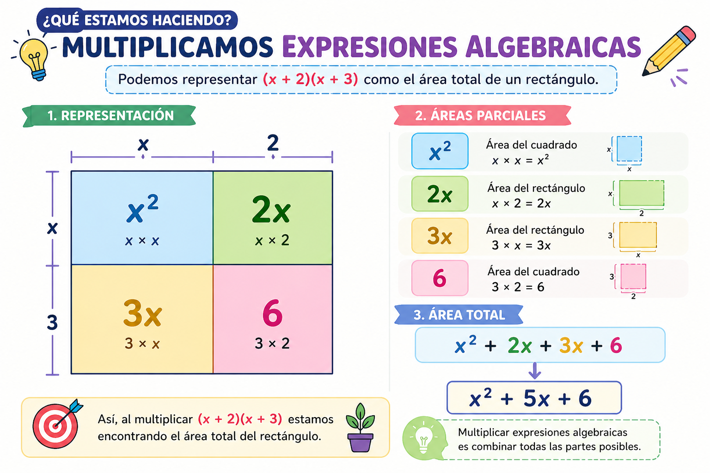
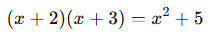
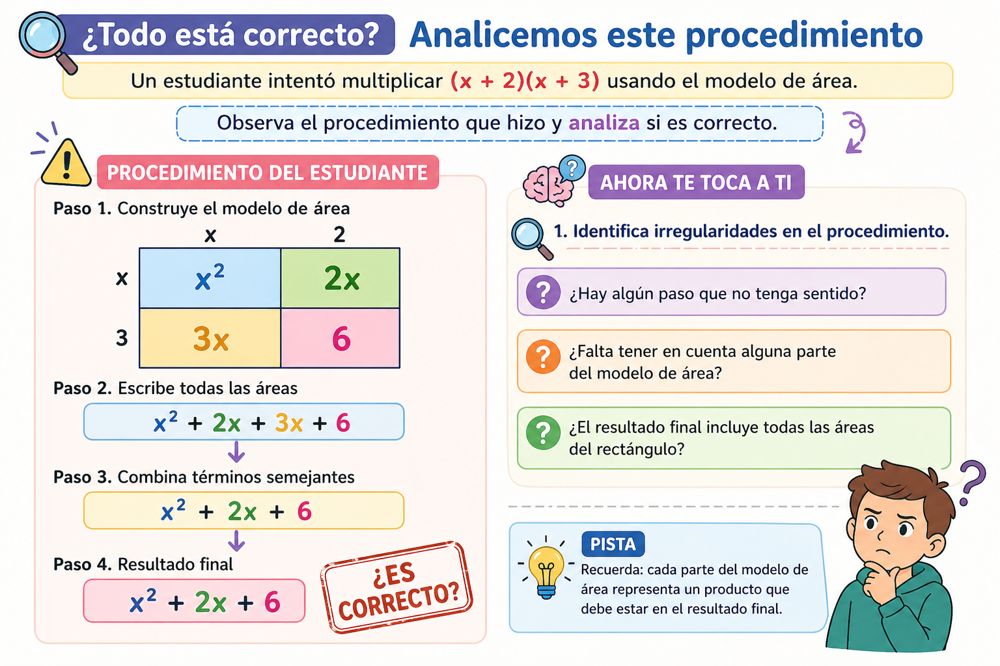
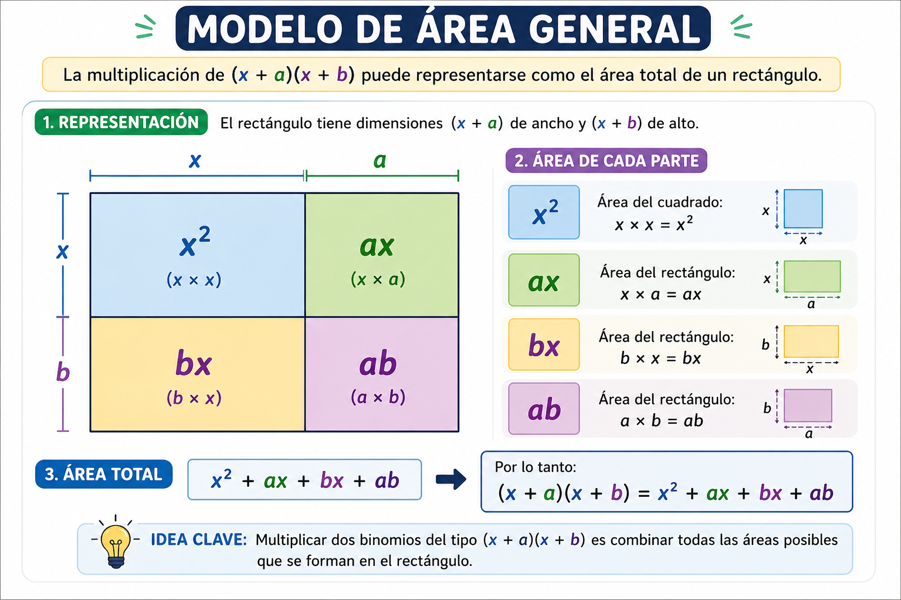

8°
EXPLORACIÓN
Situación problema central
En una feria escolar, un grupo de estudiantes organiza la venta de kits ecológicos.
Cada kit contiene:
- x cuadernos reciclados
- 2 lápices
El precio de cada cuaderno depende de la cantidad producida y se representa como (x+3) miles de pesos.
El precio de cada lápiz es fijo y se representa como (x+1) miles de pesos.
El grupo necesita calcular el costo total de producción de varios kits, pero se da cuenta de que no basta con sumar: deben encontrar una forma de multiplicar expresiones.
1. Observando productos sencillos
Sin resolver completamente, analiza:
a) (x+2)(3)
b) (x+2)(x)
c) (x+2)(x+3)
Responde en tu cuaderno:
★ 1. ¿Qué crees que significa multiplicar una expresión por un número?
★ 2. ¿Qué crees que ocurre cuando multiplicas una expresión por otra expresión?
3. ¿En cuál caso te resulta más fácil imaginar el resultado? ¿Por qué?
2. Represento con áreas
Imagina que cada expresión representa una medida de un rectángulo:
- Base: x+2
- Altura: x+3
Responde:
★ 1. ¿Cómo podrías dividir ese rectángulo en partes más pequeñas?
★ 2. ¿Qué áreas pequeñas puedes identificar dentro del rectángulo?
3. ¿Cómo crees que se relaciona el área total con la multiplicación de las expresiones?
Observa la siguiente representación. Concéntrate en lo que ocurre en cada parte de la figura y en cómo se organiza la información.

3. Buscando patrones
Observa los siguientes productos:
a) (x+1)(x+1)
b) (x+2)(x+2)
c) (x+3)(x+3)
Responde:
★ 1. ¿Qué tienen en común estas expresiones?
★ 2. ¿Qué crees que pasará al multiplicarlas?
3. ¿Crees que aparecerá algún patrón en los resultados? Explica tu idea.
4. Pensando en contexto
Si un estudiante dice:
“Para saber el costo total, basta con sumar todo lo que hay dentro de los paréntesis.”
Responde:
★ 1. ¿Estás de acuerdo con esa afirmación?
2. ¿Qué dudas te genera esa idea?
3. ¿Por qué crees que en algunos casos se necesita multiplicar y no solo sumar?
ANALIZA
1. Multiplico paso a paso
Calcula:
a) (x+2)(3)
b) (x+2)(4)
★ 1. ¿Qué hiciste con cada término dentro del paréntesis?
2. ¿Qué patrón observas en el resultado?
2. Comparo productos
Calcula:
a) (x+2)(x+3)
b) (x+2)(x+5)
★ 1. ¿Qué pasos seguiste en cada caso?
2. ¿Qué partes del resultado se repiten?
3. ¿Qué cambia cuando cambian los números?
3. Analizo una estrategia
Un estudiante resuelve así:

Responde:
★ 1. ¿Qué hizo el estudiante?
2. ¿Qué crees que tuvo en cuenta y qué pudo haber olvidado?
3. ¿Cómo explicarías si su procedimiento es suficiente o no?
4. Relaciono con áreas
Retoma el rectángulo de base x+2 y altura x+3.
★ 1. ¿Cuántas partes puedes identificar ahora?
2. ¿Cómo se relaciona cada parte con una multiplicación?
3. ¿Qué crees que representa el resultado total?
Observa el siguiente procedimiento con atención. Analiza cada paso y decide si todo tiene sentido o si hay algo que te genera duda.

5. Identifico regularidades
Observa:
a) (x+1)(x+1)
b) (x+2)(x+2)
★ 1. ¿Qué tienen en común estos productos?
2. ¿Qué tipo de términos crees que aparecerán en el resultado?
3. ¿Cómo describirías ese comportamiento con tus palabras?
CONOCE ALGO NUEVO
Multiplicación de expresiones algebraicas
Hasta ahora has explorado cómo se comporta la multiplicación entre expresiones.
Ahora vamos a organizar estas ideas con lenguaje matemático más preciso.
1. Multiplicar una expresión por un número
Cuando una expresión algebraica se multiplica por un número, cada término de la expresión se multiplica por ese número.
Ejemplo:
3(x + 2) = 3x + 6
Este proceso se conoce como distribuir la multiplicación.
2. Multiplicar una expresión por otra expresión
Cuando multiplicas dos expresiones, cada término de la primera se multiplica por cada término de la segunda.
Ejemplo paso a paso:
(x + 2)(x + 3)
Paso 1: Multiplica el primer término con cada término del segundo paréntesis
x · x + x · 3
Paso 2: Multiplica el segundo término con cada término del segundo paréntesis
2 · x + 2 · 3
Paso 3: Escribe todos los resultados
x2 + 3x + 2x + 6
Paso 4: Reduce términos semejantes
x2 + 5x + 6
3. Interpretación geométrica (modelo de área)
Multiplicar dos expresiones también puede interpretarse como el área de un rectángulo.
Si:
Base = x+2
Altura = x+3
El área total se obtiene sumando las áreas de cada parte:
x · x = x2
x · 3 = 3x
2 · x = 2x
2 · 3 = 6
Por lo tanto:
Área total = x2 + 5x + 6
Observa cómo este mismo tipo de multiplicación puede representarse de forma general.
Analiza cómo se organizan los términos cuando las cantidades no son números específicos.

4. Productos notables (casos especiales)
Algunas multiplicaciones de expresiones siguen patrones que se repiten.
Estos se llaman productos notables.
Producto notable 1: cuadrado de un binomio
(x + a)2 = (x + a)(x + a)
Ejemplo:
(x + 2)2 = (x + 2)(x + 2)
Desarrollando:
x2 + 2x + 2x + 4 = x2 + 4x + 4
Observa el patrón:
(x + a)2 = x2 + 2ax + a2
Producto notable 2: diferencia de cuadrados
(x + a)(x - a)
Ejemplo:
(x + 3)(x - 3)
Desarrollando:
x2 - 3x + 3x - 9 = x2 - 9
Observa que los términos del medio se cancelan:
(x + a)(x - a) = x2 - a2
5. Conexión conceptual
En las expresiones algebraicas:
- Multiplicar implica distribuir cada término.
- El resultado se organiza en términos semejantes.
- Algunos productos siguen patrones especiales (productos notables).
Estas herramientas permiten:
- Simplificar cálculos
- Representar situaciones más complejas
- Modelar relaciones matemáticas
ACTIVIDADES DE APRENDIZAJE
Las siguientes actividades están organizadas por niveles.
Debes resolver en tu cuaderno mostrando procedimiento completo.
ACTIVIDAD 1. Multiplico expresiones con sentido
★ Nivel esencial
1. Aplica la multiplicación:
- 3(x + 4)
- 5(x + 2)
- -2(x + 3)
★ Explica en cada caso qué hiciste con cada término.
2. Desarrolla paso a paso:
- (x + 2)(x + 3)
- (x + 1)(x + 4)
Nivel intermedio
3. Desarrolla y simplifica:
- (x + 5)(x + 2)
- (x + 3)(x + 6)
4. Compara tus resultados:
- ¿Qué tipo de términos aparecen siempre?
- ¿Qué parte cambia en cada ejercicio?
Nivel de profundización
5. Construye dos expresiones distintas que al multiplicarse den como resultado:
x2 + 7x + 10
Explica cómo pensaste la respuesta.
ACTIVIDAD 2. Reconozco productos notables
★ Nivel esencial
1. Desarrolla:
- (x + 2)2
- (x + 3)2
★ Describe qué patrón observas en los resultados.
2. Desarrolla:
- (x + 4)(x - 4)
- (x + 6)(x - 6)
Nivel intermedio
3. Completa:
(x + 5)2 = x2 + ____ + ____
(x + 7)(x - 7) = x2 - ____
Nivel de profundización
4. Analiza la expresión:
(x + a)2
Explica con tus palabras qué representa cada parte del resultado.
ACTIVIDAD 3. Relación con áreas
★ Nivel esencial
1. Representa con un dibujo un rectángulo de lados:
(x + 2) y (x + 3)
2. Divide el rectángulo en partes.
3. Escribe la multiplicación asociada.
Nivel intermedio
4. Calcula el área total usando multiplicación:
(x + 4)(x + 1)
Nivel de profundización
5. Explica por qué el modelo de área ayuda a entender la multiplicación de expresiones.
ACTIVIDAD 4. Aplicación contextual
En la feria escolar:
Cada kit tiene:
- x cuadernos
- 3 accesorios
El costo de producción se representa como:
(x + 3)(x + 2)
★ Nivel esencial
1. Desarrolla la expresión.
2. Explica qué representa cada término del resultado.
Nivel intermedio
3. Si x=5, calcula el costo total.
Nivel de profundización
4. Interpreta el resultado:
x2 + 5x + 6
¿Qué significa cada parte en el contexto?
ACTIVIDAD 5. Explico y argumento
★ Nivel esencial
1. Explica con tus palabras:
- ¿Qué significa multiplicar dos expresiones algebraicas?
- ¿Por qué no se pueden sumar directamente los términos dentro de paréntesis?
Nivel intermedio
2. Da un ejemplo donde un error común ocurra al multiplicar expresiones y corrígelo.
Nivel de profundización
3. Crea una situación de la vida real donde sea necesario multiplicar expresiones algebraicas.
Pregunta de cierre reflexivo
¿Cómo te ayuda la multiplicación de expresiones algebraicas a representar situaciones reales de manera más completa que usando solo operaciones numéricas?
EVALUACIÓN FORMATIVA INTERACTIVA
Tema: Multiplicación de polinomios y productos notables
Instrucción: Responde primero en tu cuaderno. Luego selecciona una opción para verificar tu respuesta.
1. Pregunta conceptual
¿Qué significa multiplicar dos expresiones algebraicas como (x + 2)(x + 3)?
2. Pregunta procedimental
Desarrolla la siguiente expresión:
(x + 2)(x + 3)
3. Producto notable
¿Cuál es el resultado de la expresión?
(x + 4)2
4. Aplicación en contexto
Si el área de un rectángulo está representada por:
(x + 2)(x + 5)
¿Qué representa el resultado al desarrollar la expresión?
5. Análisis de error
Un estudiante afirma:
(x + 3)(x + 2) = x2 + 5
¿Qué se puede decir sobre su procedimiento?
REFERENCIAS BIBLIOGRÁFICAS
Ministerio de Educación Nacional. (2006). Estándares básicos de competencias en matemáticas. Bogotá, Colombia: MEN.
Ministerio de Educación Nacional. (2017). Vamos a aprender Matemáticas 8°. Bogotá, Colombia: Ediciones SM.
Colegio Integrado Simón Bolívar. (2026). Plan de área de aritmética grado 8°. Cúcuta, Colombia
GeoGebra GmbH. (2024). Recursos interactivos para la enseñanza de las matemáticas. Recuperado de: https://www.geogebra.org
Creative Commons. (s.f.). Licencias Creative Commons. Recuperado de: https://creativecommons.org/licenses/by-sa/4.0/